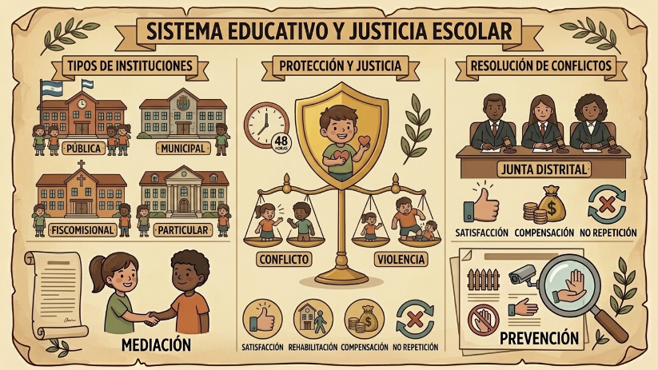

No todas las escuelas son iguales ante la ley. Dependiendo de quién las financie, tenemos instituciones públicas (siempre laicas y gratuitas), municipales, fiscomisionales (que mezclan fondos estatales y privados sin fines de lucro) y las particulares, que siguen su propia filosofía. Incluso existen instituciones específicas como las de fuerzas armadas y policía, que funcionan bajo sus valores institucionales propios.

Protección frente a la violencia
La ley es muy estricta cuando se trata de nuestra integridad. El Artículo 108 nos dice que proteger derechos no es solo poner leyes, sino educar y sensibilizar. Aquí, los niños, niñas y adolescentes tienen prioridad absoluta. Si alguien conoce un caso de vulneración, tiene la obligación de denunciar en 48 horas (esto es la debida diligencia).
Es vital no confundir conceptos: una cosa es un conflicto escolar (donde no hay abuso de poder) y otra muy distinta la violencia escolar o el acoso. El acoso es abusar de una posición de superioridad, mientras que el hostigamiento académico es cuando un profesor o autoridad humilla cruelmente a un alumno. Ante esto, el sistema se activa para detectar, prevenir y, si el daño ya ocurrió, aplicar la reparación integral.
Reparación Integral: Sanar el daño
Reparar no es solo pagar una multa. La reparación integral busca que la víctima recupere su proyecto de vida mediante: satisfacción (disculpas públicas o actos simbólicos), rehabilitación (ayuda médica y psicológica), compensación (dinero por daños) y garantías de no repetición (reformas para que el error no vuelva a pasar).
Justicia mediante el diálogo (MASC)
No todo tiene que terminar en un juicio largo. Existen los MASC (Mecanismos Alternativos de Solución de Conflictos). Estos son espacios de diálogo donde la mediación, la conciliación o la negociación permiten resolver problemas de forma rápida, barata y pacífica. Si el tema es muy grave (faltas graves o muy graves), interviene la Junta Distrital de Resolución de Conflictos, formada por tres abogados que garantizan que se haga justicia de forma técnica y profesional.